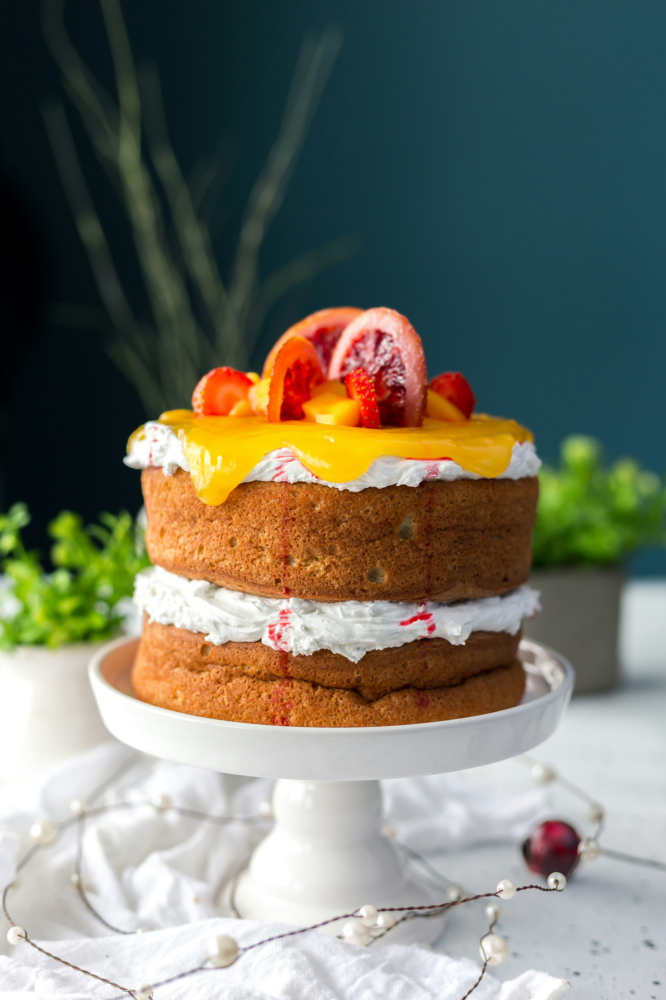

Cake

Description
A simple cake typically consists of basic ingredients such as flour, sugar, eggs, butter or oil, and leavening
agents like baking powder or baking soda. It's a versatile dessert that can be flavored and decorated in various
ways to suit different tastes and occasions.
This basic recipe serves as a versatile foundation for creating various types of cakes. You can customize the
flavor by adding ingredients like cocoa powder for chocolate cake, lemon zest for lemon cake, or almond extract for
almond-flavored cake. Additionally, you can top the cake with frosting, glaze, fruit, or whipped cream for added
flavor and decoration.
Ingredients
- 1 1/2 cups all-purpose flour
- 1 cup granulated sugar
- 1/2 cup unsalted butter, softened(or vegetable oil)
- 2 large eggs
- 1 teaspoon vanilla extract
- 1 teaspoon baking powder
- 1/2 teaspoon salt
- 1/2 cup milk
Steps
-
Preheat your oven to 350°F (175°C). Grease and flour a 9-inch round cake pan or line it with parchment paper for
easy removal.
-
In a mixing bowl, cream together the softened butter and sugar until light and fluffy.
-
Add the eggs, one at a time, beating well after each addition. Stir in the vanilla extract.
-
In a separate bowl, whisk together the flour, baking powder, and salt.
-
Gradually add the dry ingredients to the wet ingredients, alternating with the milk, and mixing until just
combined. Be careful not to overmix.
-
Pour the batter into the prepared cake pan and spread it out evenly with a spatula.
-
Bake in the preheated oven for 25-30 minutes, or until a toothpick inserted into the center of the cake comes
out clean.
-
Remove the cake from the oven and allow it to cool in the pan for about 10 minutes before transferring it to a
wire rack to cool completely.
-
Once cooled, you can enjoy the simple cake as is, or you can frost and decorate it as desired.